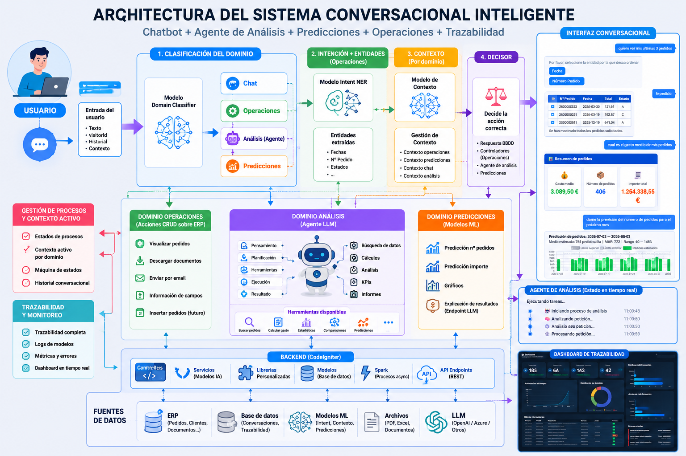
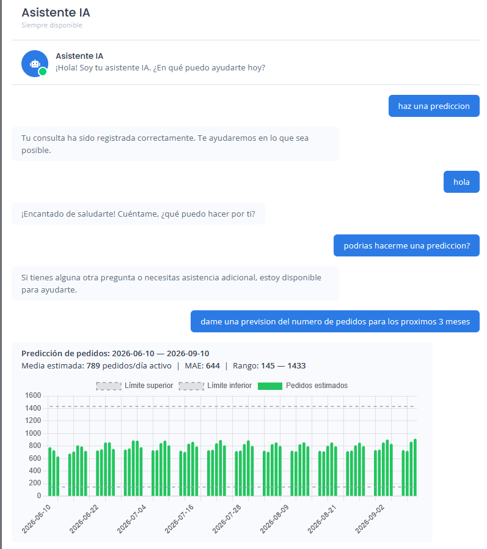
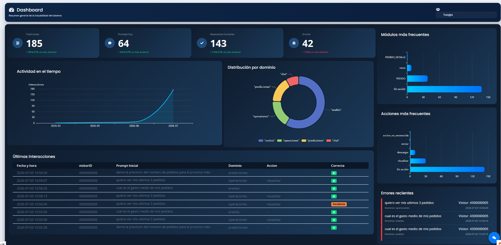
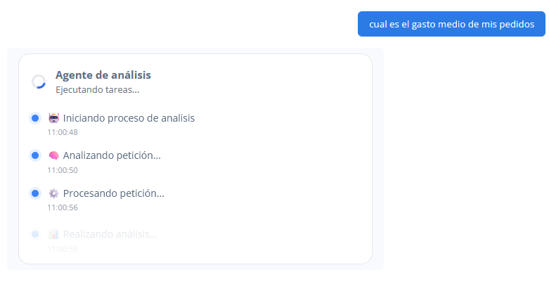
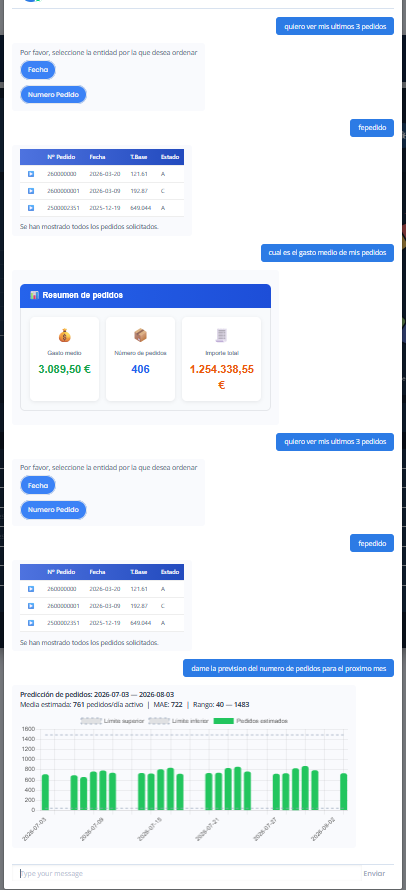
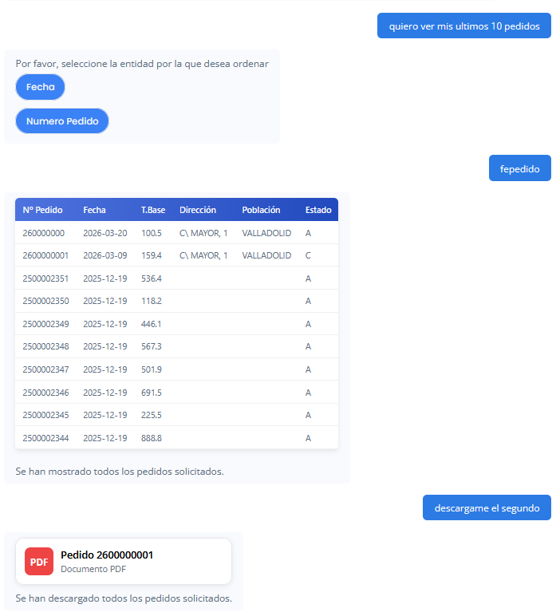
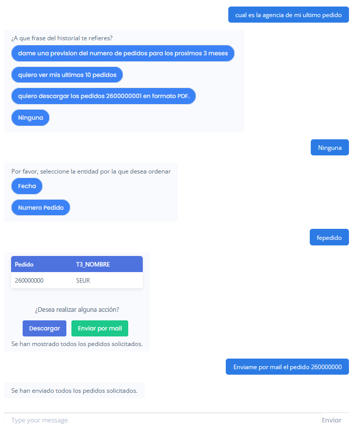
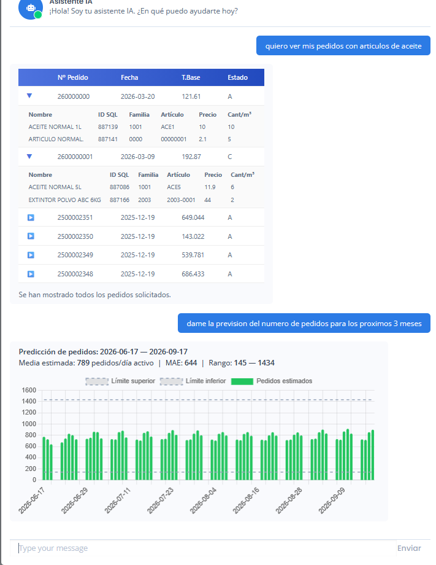

ERP Order Assistant Intelligence
🔹 Descripción
ERP Order Assistant Intelligence es una plataforma conversacional inteligente desarrollada para automatizar la interacción con el ERP de la empresa mediante lenguaje natural. Permite consultar, visualizar, descargar y enviar documentos, así como realizar análisis sobre la información empresarial y generar predicciones utilizando inteligencia artificial.
La solución combina modelos de IA desarrollados específicamente para el proyecto (clasificación de intención, reconocimiento de entidades y análisis de contexto conversacional) con agentes basados en Large Language Models (LLMs) capaces de ejecutar tareas complejas mediante herramientas (Tool Calling).
La arquitectura se basa en una orquestación híbrida donde cada dominio (operaciones, análisis, predicciones y conversación general) dispone de su propio flujo de decisión, contexto y lógica de negocio, permitiendo mantener conversaciones multi-step, ejecutar procesos asíncronos y ofrecer respuestas adaptadas al estado de cada usuario.
Todo el sistema ha sido diseñado e implementado desde cero, incluyendo backend, modelos de IA, APIs, integración con el ERP, sistema conversacional, trazabilidad y monitorización.
🧩 Roles dentro del proyecto
Diseño de arquitectura del sistema
- Definición de arquitectura modular (controladores, servicios, estados, procesos, modelos)
- Diseño del flujo conversacional y gestión de contexto dinámico
Desarrollo backend
- Implementación completa en PHP (CodeIgniter)
- Desarrollo de endpoints, lógica de negocio y orquestación del sistema
- Integración con APIs externas y servicios internos
- Procesamiento asíncrono de agentes IA.
- Sistema de publicación de estados en tiempo real.
Desarrollo y entrenamiento de modelos de IA
- Entrenamiento de modelos de clasificación de intención (Intent Recognition)
- Implementación de modelos de Named Entity Recognition (NER)
- Desarrollo de modelo de detección de contexto conversacional
- Integración de agentes LLM con Tool Calling para ejecución de tareas complejas.
- Evaluación y ajuste de modelos
Integración de IA en producción
- Integración de modelos mediante servicios externos (API REST)
- Comunicación backend ↔ modelos de IA
- Gestión de respuestas en tiempo real
Motor conversacional
- Orquestación inteligente entre dominios.
- Gestión independiente del contexto por dominio.
- Procesos multi-step con recuperación de estado.
- Resolución automática de herramientas mediante agentes IA.
- Persistencia del historial conversacional.
Gestión de datos
- Diseño de modelos de base de datos
- Persistencia de historial, contexto y estados de usuario
Lógica de negocio
- Consulta
- Visualización
- Descarga
- Envío por correo
Optimización y control
- Manejo de errores y validaciones
- Control de sesiones y flujos de usuario
- Sistema de reset de procesos y recuperación de estado
Analítica y Predicción
- Predicción del número de pedidos mediante modelos Machine Learning.
- Generación automática de gráficos interactivos.
- Agente de análisis capaz de responder preguntas sobre datos empresariales.
- Interpretación automática de resultados mediante IA.
Monitorización, Trazabilidad y MLOps
- Sistema completo de trazabilidad de cada conversación.
- Registro de todas las decisiones tomadas por los modelos de IA.
- Monitorización de métricas de inferencia (confidence, dominios, intents, contexto).
- Dashboard de MLOps para supervisar el estado de los modelos en producción.
- Detección de degradación del rendimiento y evolución temporal de los modelos.
- Análisis de errores, dominios, herramientas e interacciones de los usuarios.
⚙️ Arquitectura

🧠 Arquitectura Inteligente
La solución está estructurada mediante una arquitectura híbrida compuesta por varios dominios especializados:
- Operaciones: ejecución de acciones sobre el ERP.
- Predicciones: modelos de Machine Learning para estimaciones futuras.
- Análisis: agente LLM con capacidad de Tool Calling.
- Chat: conversación general con respuestas inteligentes.
Cada dominio dispone de su propio sistema de contexto, permitiendo conversaciones independientes y evitando interferencias entre distintos flujos conversacionales.
🖥️ Tecnologías
🚀 Funcionalidades
- Consultas al ERP mediante lenguaje natural.
- Visualización de pedidos.
- Descarga de documentos.
- Envío automático por correo electrónico.
- Análisis estadístico mediante agentes IA.
- Predicción del número de pedidos.
- Interpretación automática de gráficos.
- Conversaciones multi-step con mantenimiento de contexto.
- Procesamiento asíncrono de tareas.
- Dashboard de trazabilidad y monitorización.
- Dashboard de MLOps para monitorización de modelos IA.
- Visualización del estado y salud de los modelos en producción.
- Seguimiento de métricas como Accuracy, F1, Recall, Precision y Confidence.
- Análisis temporal de la evolución de los modelos.
📸 Galería del proyecto
A continuación se muestran algunas capturas del funcionamiento del sistema, incluyendo el asistente conversacional, el agente de análisis, el módulo de predicciones y el dashboard de trazabilidad desarrollado para monitorizar el comportamiento de la plataforma.







